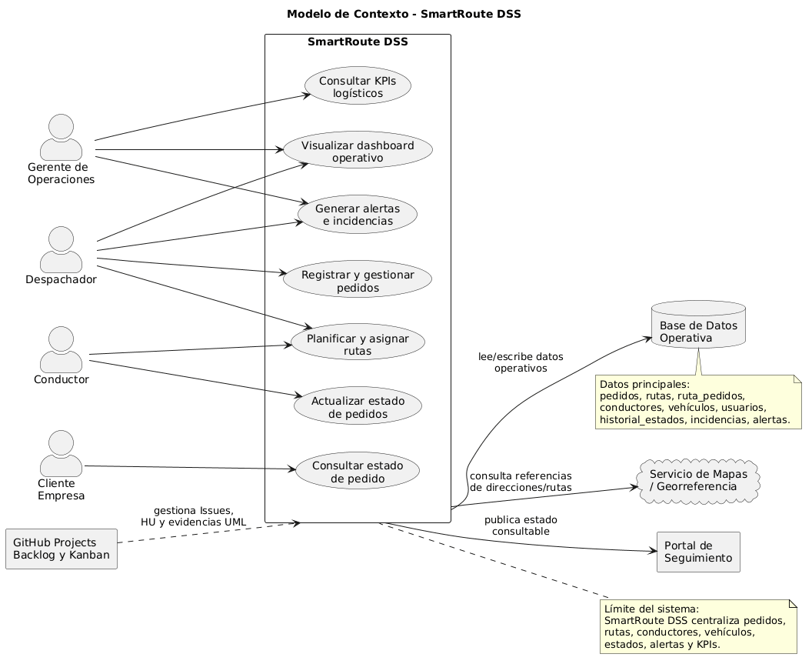
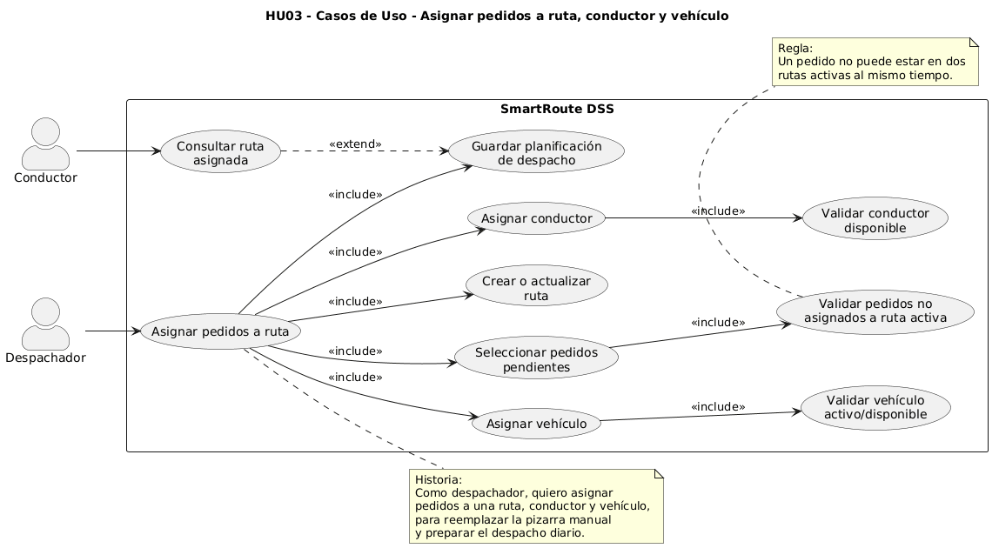
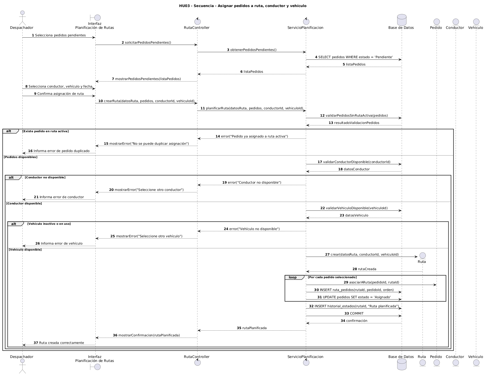
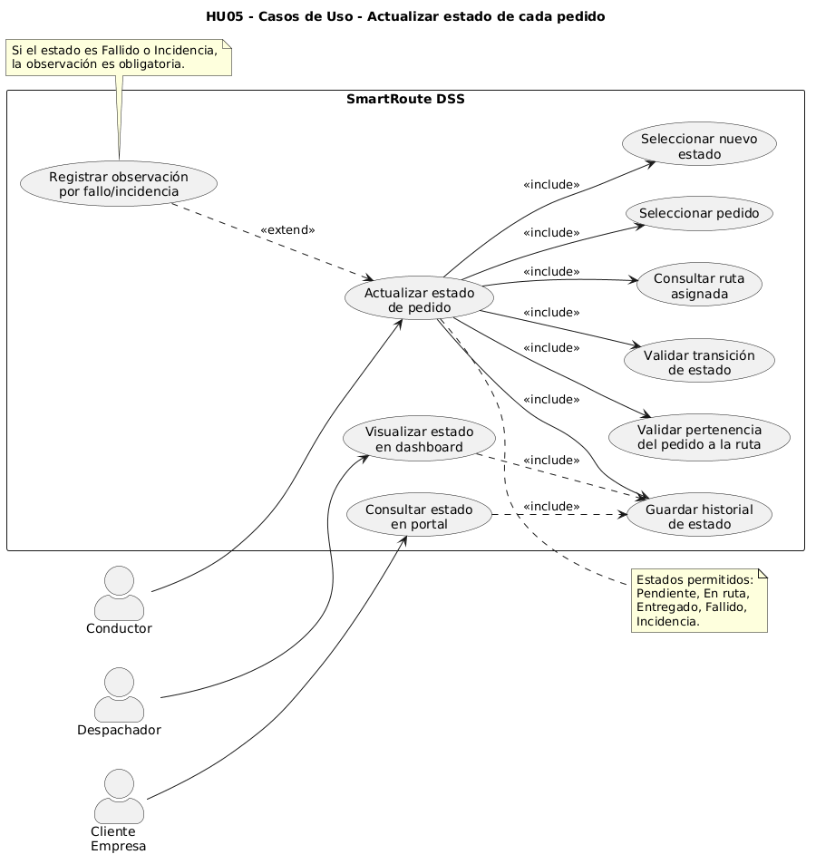
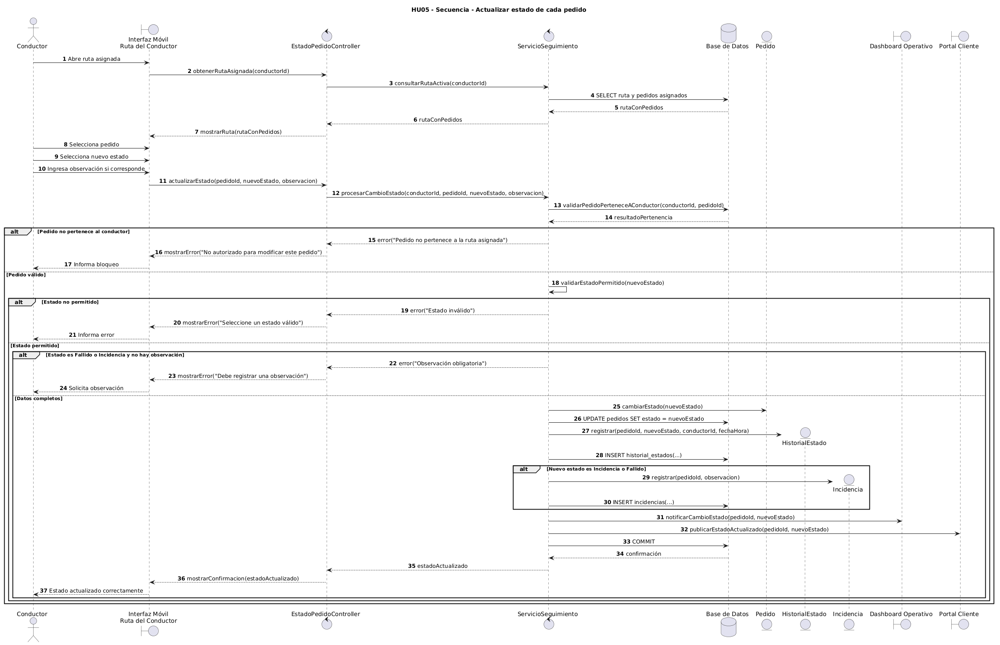
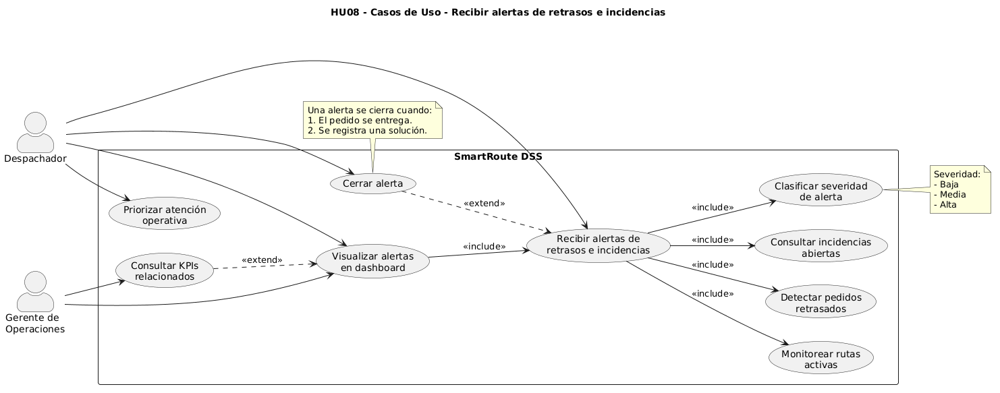
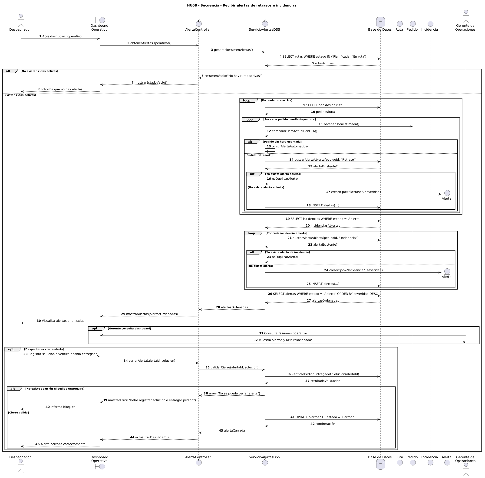

Materia: Sistemas de Información II
Proyecto: SmartRoute DSS
Caso: FlashLogistics - El Caos de la Distribución
Squad: Cacatúas
Integrantes: Alex Saul Fernández Valdez; Wilber Perez Subelza
Repositorio GitHub: https://github.com/Alex-Fernandez-2003/Actividad-2-SDI-II.git
GitHub Project / Kanban: https://github.com/users/Alex-Fernandez-2003/projects/1/views/1
Fecha: 15 de junio de 2026
La Actividad Práctica 4 tiene como objetivo transformar las historias críticas del MVP en modelos técnicos claros, utilizando UML como herramienta de arquitectura y refinamiento. En esta fase, el squad Cacatúas actúa como equipo de arquitectura de software para reducir la ambigüedad antes de programar.
El sistema trabajado es SmartRoute DSS, una solución de apoyo a la toma de decisiones para FlashLogistics. El MVP busca digitalizar la planificación de rutas, mejorar la trazabilidad de pedidos, reducir llamadas repetitivas al despacho y entregar información operativa mediante dashboards, alertas y KPIs.
| Elemento | Enlace |
|---|---|
| Repositorio GitHub | https://github.com/Alex-Fernandez-2003/Actividad-2-SDI-II.git |
| GitHub Project / Kanban | https://github.com/users/Alex-Fernandez-2003/projects/1/views/1 |
| Carpeta de modelos UML | docs/uml/ |
La Definition of Ready (DoR) define los criterios mínimos que debe cumplir una Historia de Usuario antes de ingresar a un Sprint. Su objetivo es asegurar que el equipo no programe sobre ambigüedad.
| Nº | Criterio DoR | Cumple |
|---|---|---|
| 1 | La historia está redactada en formato: Como [rol], quiero [acción], para [beneficio]. | ☐ |
| 2 | La historia pertenece a una épica del MVP. | ☐ |
| 3 | La historia tiene prioridad definida. | ☐ |
| 4 | La historia tiene estimación en Story Points. | ☐ |
| 5 | La historia tiene criterios de aceptación claros y verificables. | ☐ |
| 6 | La historia cumple el criterio INVEST. | ☐ |
| 7 | Los actores principales y secundarios están identificados. | ☐ |
| 8 | Los requisitos de datos o tablas necesarias están identificados. | ☐ |
| 9 | Las reglas de negocio principales están descritas. | ☐ |
| 10 | Los flujos alternativos o errores esperados están identificados. | ☐ |
| 11 | Existe diagrama UML cuando la historia contiene lógica compleja. | ☐ |
| 12 | La historia considera seguridad, autorización y exposición mínima de datos. | ☐ |
| 13 | La historia puede implementarse y probarse dentro de un Sprint. | ☐ |
| 14 | El Issue de GitHub contiene descripción, checklist y labels correspondientes. | ☐ |
El modelo de contexto define los límites de SmartRoute DSS y sus interacciones externas.

Se seleccionaron tres historias críticas porque representan el núcleo del MVP y su relación con la toma de decisiones operativas.
| ID | Historia crítica | Épica | Motivo de selección |
|---|---|---|---|
| HU03 | Asignar pedidos a ruta, conductor y vehículo | Epic: Planificación de Rutas | Es el centro de la planificación logística y reemplaza la pizarra manual. |
| HU05 | Actualizar estado de cada pedido | Epic: Seguimiento y Cliente | Alimenta la trazabilidad para operaciones y clientes. |
| HU08 | Recibir alertas de retrasos e incidencias | Epic: Dashboard DSS y Alertas | Representa el soporte a la toma de decisiones del DSS. |
Historia de Usuario:
Como despachador, quiero asignar pedidos a una ruta, conductor y vehículo, para reemplazar la pizarra manual y preparar el despacho diario con mayor control.
Actor principal: Despachador
Actores secundarios: Conductor
Épica: Epic: Planificación de Rutas
Prioridad: Alta
El despachador selecciona pedidos pendientes, define una ruta, asigna conductor y vehículo. El sistema valida que los pedidos no estén en otra ruta activa, que el conductor esté disponible y que el vehículo esté activo. Después registra la ruta, asocia los pedidos y deja la información disponible para el conductor.
pedidosrutasruta_pedidosconductoresvehiculosusuarioshistorial_estadosAporta al ODS 9 porque fortalece la infraestructura digital de la operación logística, reemplazando procesos manuales por planificación tecnológica.


Historia de Usuario:
Como conductor, quiero actualizar el estado de cada pedido, para que operaciones y clientes conozcan el avance de la entrega.
Actor principal: Conductor
Actores secundarios: Despachador, Cliente empresa
Épica: Epic: Seguimiento y Cliente
Prioridad: Alta
El conductor ingresa a su ruta asignada, selecciona un pedido y actualiza su estado. El sistema valida que el pedido pertenezca a su ruta, verifica que el estado sea permitido y exige observación cuando el estado sea Fallido o Incidencia. Luego registra el cambio, actualiza el pedido y refleja la información en el dashboard y en el portal de seguimiento.
pedidosrutasruta_pedidosusuarioshistorial_estadosincidenciasAporta al ODS 8 porque mejora la productividad operativa, reduce llamadas repetitivas y disminuye la sobrecarga del despacho.


Historia de Usuario:
Como despachador, quiero recibir alertas de retrasos o incidencias, para priorizar la atención operativa.
Actor principal: Despachador
Actores secundarios: Gerente de operaciones
Épica: Epic: Dashboard DSS y Alertas
Prioridad: Media
El sistema monitorea rutas y pedidos activos. Compara la hora estimada con la hora actual, identifica incidencias abiertas y genera alertas clasificadas por severidad. El despachador visualiza las alertas en el dashboard y puede priorizar la atención de los casos más críticos.
pedidosrutasconductoresalertasincidenciashistorial_estadosAporta al ODS 9 porque incorpora monitoreo digital y respuesta temprana. También aporta al ODS 8 porque mejora la productividad del despacho y reduce decisiones reactivas.


Para cumplir con el entregable, se deben subir los archivos .puml y .png a la carpeta:
docs/uml/
Luego, en los Issues correspondientes, se deben insertar las imágenes o enlaces de los diagramas:
| Captura | Descripción |
|---|---|
| Captura del repositorio | Carpeta docs/uml con los diagramas subidos. |
| Captura del Issue HU03 | Issue con imágenes UML vinculadas. |
| Captura del Issue HU05 | Issue con imágenes UML vinculadas. |
| Captura del Issue HU08 | Issue con imágenes UML vinculadas. |
| Captura del Kanban | Tablero con las historias y labels de épica. |
El refinamiento mediante UML permite reducir la ambigüedad antes de programar. Al construir casos de uso y diagramas de secuencia, el equipo visualiza actores, responsabilidades, validaciones, objetos y mensajes antes de escribir código. Esto disminuye la carga cognitiva del desarrollador, evita supuestos ocultos y facilita que cada historia llegue al Sprint con una lógica verificable.
En SmartRoute DSS, esta práctica es especialmente importante porque el sistema apoya decisiones operativas reales: asignar rutas, actualizar estados y generar alertas requiere precisión, trazabilidad y coherencia entre datos, interfaz y reglas de negocio.
La Actividad 4 fortalece el MVP SmartRoute DSS al convertir historias críticas en modelos técnicos claros. La DoR asegura que las historias estén preparadas antes del desarrollo, el modelo de contexto delimita el sistema y los diagramas UML permiten anticipar la lógica central. Con esta base, el squad Cacatúas puede avanzar hacia una implementación más robusta, ética y eficiente.